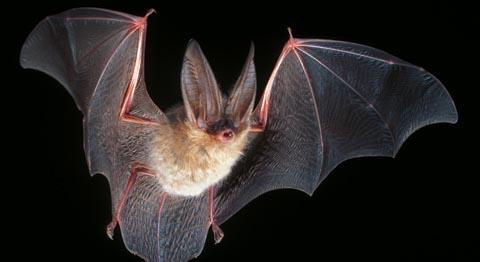
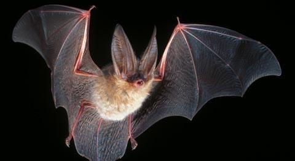

Virginia Big-Eared Bat
 (Photos on left U.S. Wildlife, right from J Scott Altenbach at Defenders of Wildlife)
(Photos on left U.S. Wildlife, right from J Scott Altenbach at Defenders of Wildlife)Description
As its name suggests the Virginia big-eared bat has long ears measuring at around 2.5 cm. The total body length measures 98 mm. Depending on the age of the bat its fur can be light to dark brown. The Virginia big-eared bat looks much like Rafinesque's big-eared bat but Rafinesque's big-eared bat has gray and white fur. The two bats do not overlap in range (Service).
Habitat and Location
Throughout the U.S. this fish can be found in the states of Kentucky, North Carolina, Tennessee, Virginia, and West Virginia, however more specific to North Carolina it can be found in Avery, Caldwell, and Watauga counties. (Service).
These bats can be found in limestone caves that they use for hibernating and maternity roosts. However, in Kentucky, they researchers found a summer colony roosting on a sandstone structure suggesting that they do not limit themselves to only using limestone caves (Johnson).
Reasons For Endangerment
Like other endangered bats the Virginia big-eared bat is often disturbed by humans during hibernation season (Johnson). Each disturbance uses up some fat reserves making harder and harder for these bats to survive the winter months.References
Johnson, Joshua B., JW Edwards, and PB Wood. Northeastern Naturalist: Virginia Big-Eared Bats (Corynorhinus Townsendii Virginianus) Roosting in Abandoned Coal Mines in West Virginia. 12 Vol. Humboldt Field Research Institute, 06/2005. Web. 28 Oct. 2016.
Service, U.S. Fish and Wildlife. "Species Profile for Virginia Big-Eared bat (Corynorhinus (=plecotus) townsendii virginianus)." Species Profile for Virginia Big-Eared bat (Corynorhinus (=plecotus) townsendii virginianus). U.S. Fish & Wildlife Service, n.d. Web. 27 Oct. 2016.